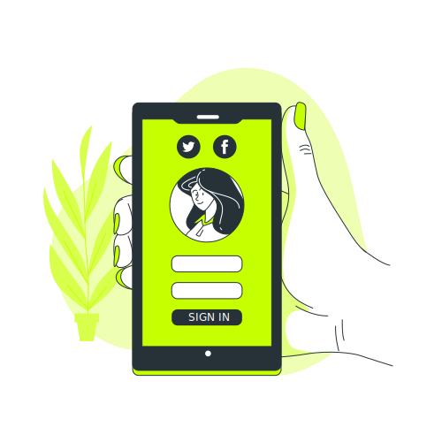

 PASO 1: REGISTRATE
Crea tu usuario con tus datos generales, indica cuales son tus intereses y que productos te interesaria conseguir.
Paso 2: POSTEA TU PRODUCTO
Sube fotos de tu producto y una breve descripción, nuestro equipo valora la veracidad de la información y el estado del producto.
Posteriormente verás en tu cuenta el/los productos que hayas posteado, y por chat se pondrán en contacto los truequeadores interesados en tus productos.
 Paso 3: ENCUENTRA EL PRODUCTO QUE NECESITAS O DESEAS
Paso 3: ENCUENTRA EL PRODUCTO QUE NECESITAS O DESEAS
Busca en las categorías el producto que necesitas o deseas, ponte en contacto con el truequeador para llegar a un acuerdo, y acordar un punto de encuentro para hacer el intercambio de los productos.
Paso 4: TRUEQUEA!